Descripción del Proyecto
Exploración visual enfocada en la documentación de paisajes naturales y la esencia cultural de los viajes. Este proyecto reúne una serie fotográfica donde se trabajó exhaustivamente con el control de la luz natural, la composición de horizontes, la profundidad de campo y un revelado digital que resalta la atmósfera y los colores orgánicos de cada entorno.
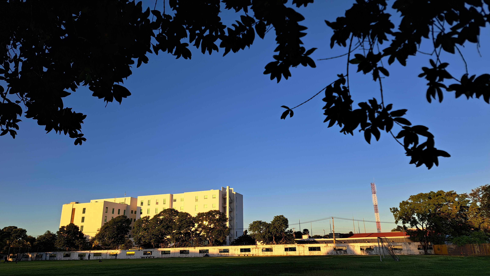
Perspectiva Lineal
Captura en exteriores que aprovecha una secuencia de estructuras cuadradas para generar un fuerte punto de fuga, guiando la mirada a través del encuadre.
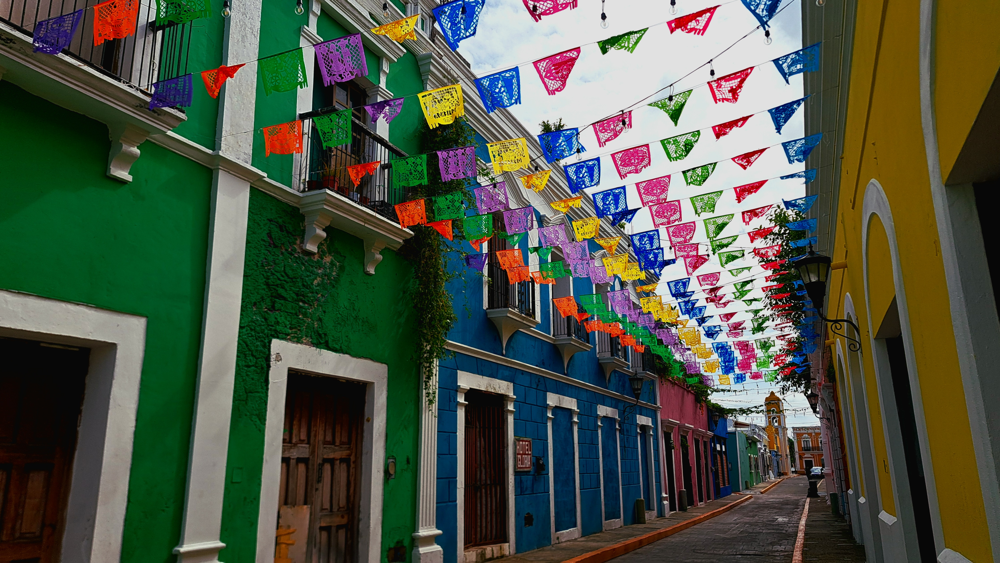
Cromatismo y Cultura
Composición urbana en ángulo contrapicado que resalta el contraste entre la arquitectura colonial y los colores vibrantes del papel picado tradicional.
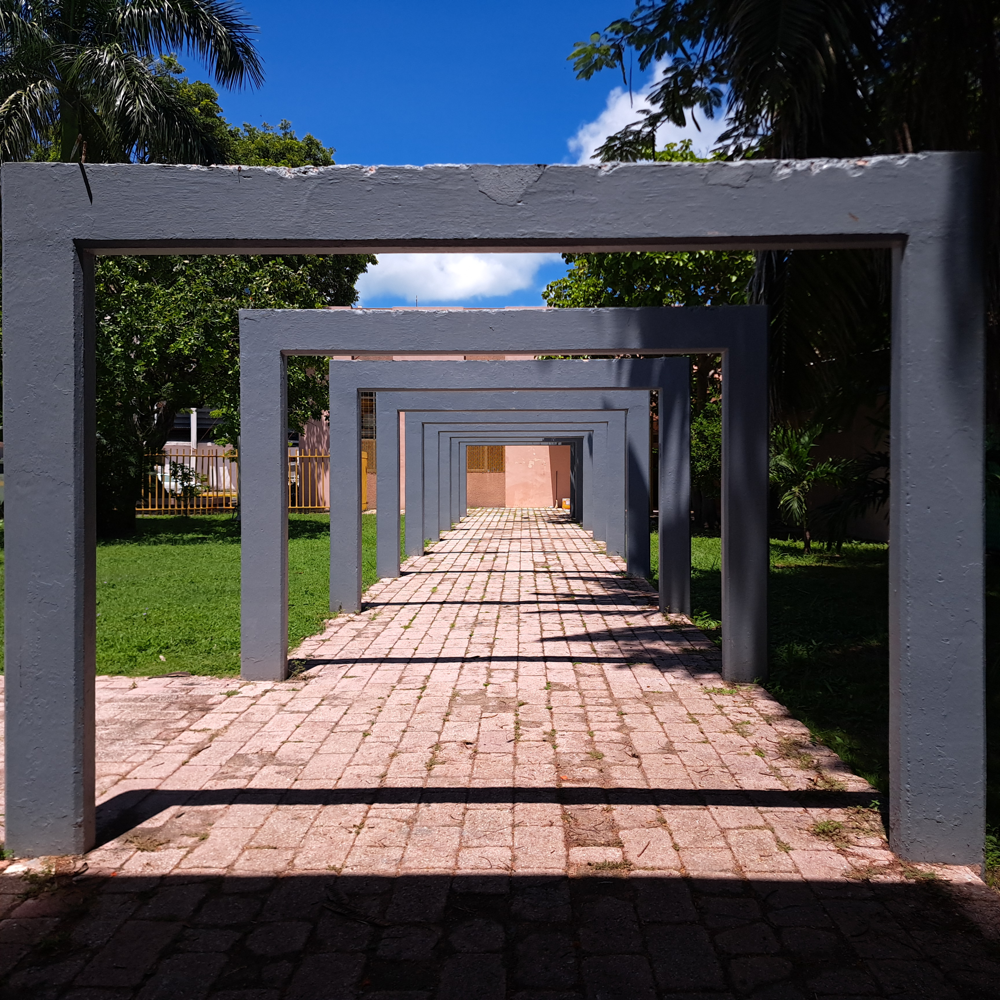
Simetría y Ritmo
Uso técnico de la repetición geométrica en monumentos públicos. El juego de luces y sombras duras define el volumen estructural sobre el césped.
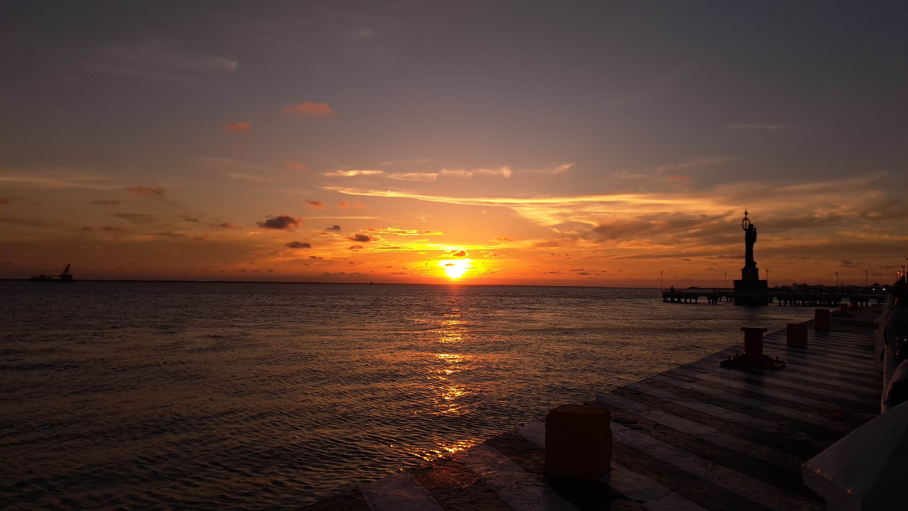
Rango Dinámico en Atardecer
Captura a contraluz durante la hora dorada en el litoral. Control preciso de la exposición para equilibrar el brillo solar con el reflejo detallado en el mar.
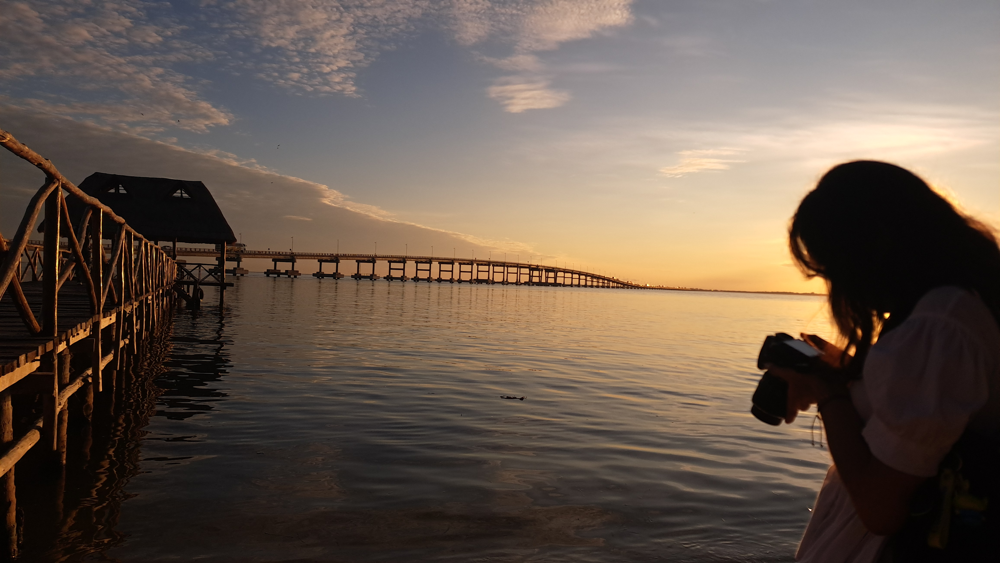
Composición Narrativa
Uso de silueta humana en primer plano para añadir escala y una atmósfera de exploración, enmarcando el horizonte marino y la infraestructura costera.
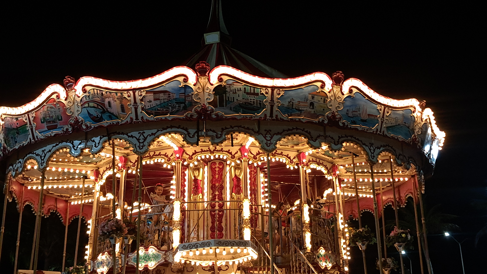
Iluminación y Contraste
Captura nocturna de un carrusel tradicional. Se gestionó una velocidad de obturación equilibrada para congelar las luces brillantes sin sobreexponer la escena.
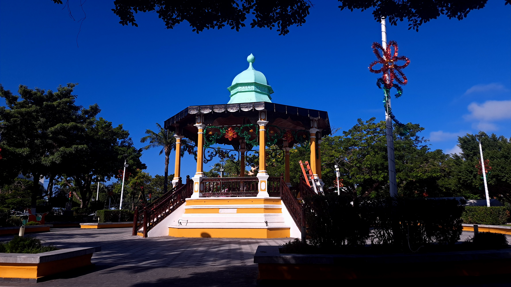
Balance de Blancos en Exteriores
Fotografía de un kiosco tradicional con iluminación de acento. El encuadre integra la vegetación perimetral logrando un contraste limpio con el azul intenso del cielo.
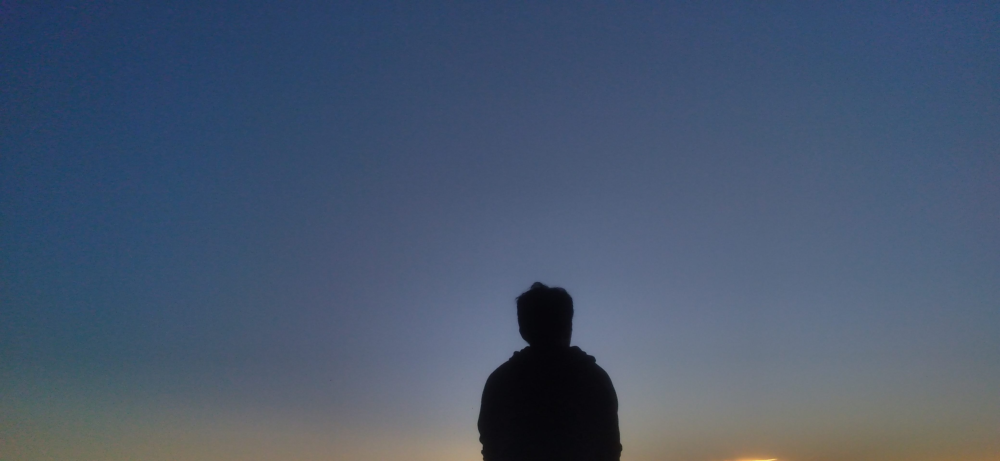
Planos de Silueta Pura
Estudio de contraste extremo aislando una figura humana a contraluz frente al amanecer, eliminando texturas internas para priorizar la forma y el mood nostálgico.
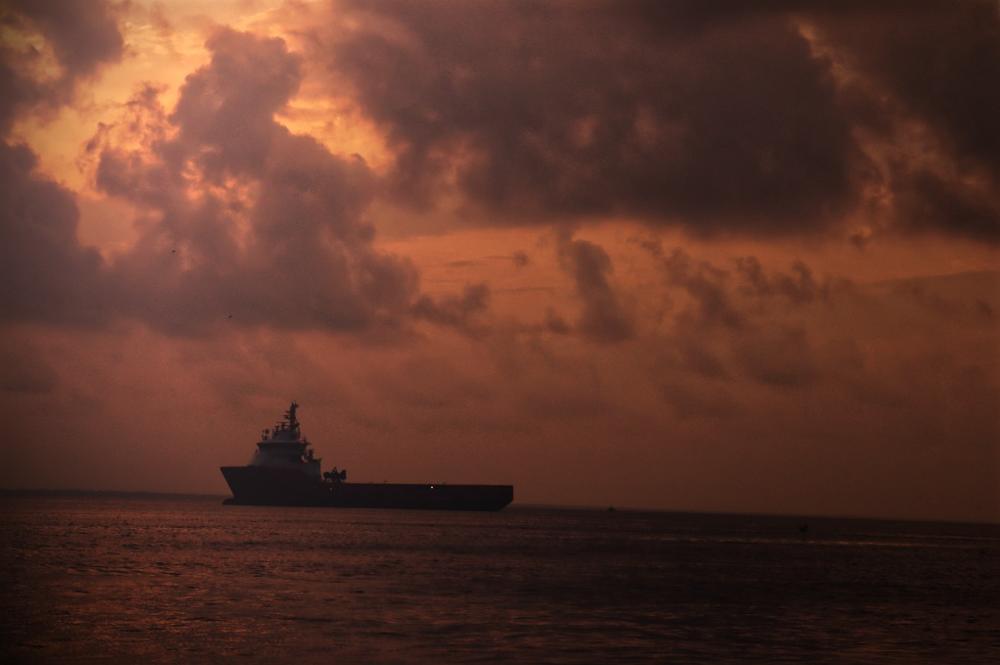
Atmósfera y Textura de Nubes
Captura de una embarcación en el horizonte marino bajo un cielo denso. El revelado enfatiza el dramatismo y las transiciones tonales de la capa nubosa.
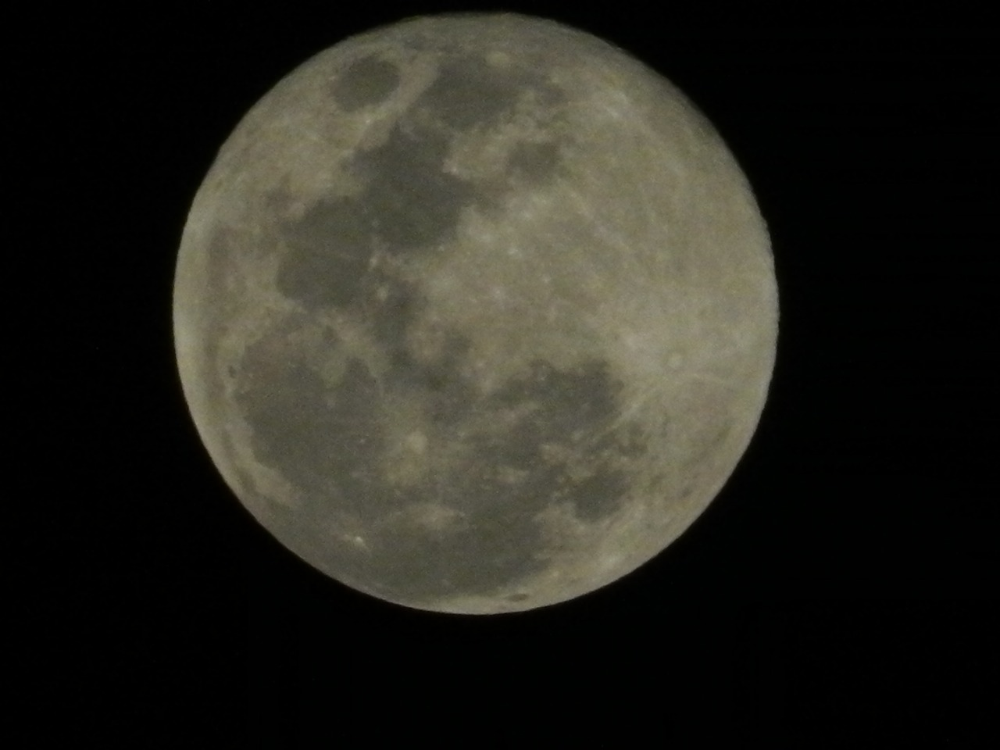
Detalle Lunar y Enfoque Crítico
Fotografía de la luna llena utilizando una distancia focal larga. Configuración técnica optimizada para rescatar la textura de los cráteres y mares lunares sobre fondo neutro.
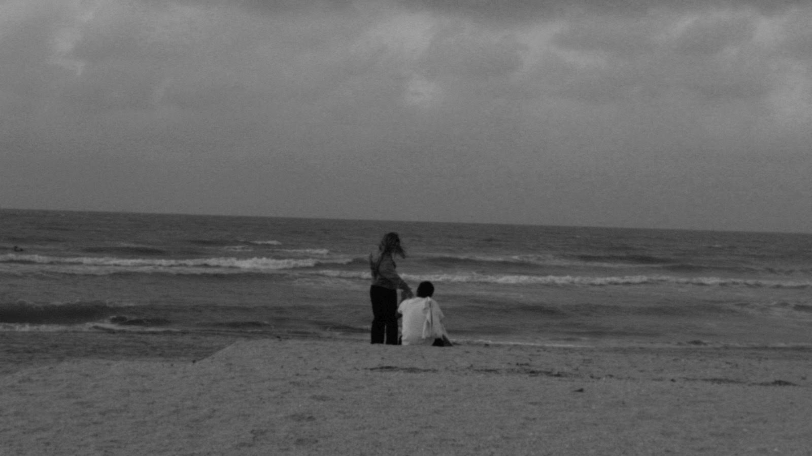
Escala y Composición Minimalista
Captura en blanco y negro que aísla figuras humanas frente a la inmensidad del mar, utilizando una escala grisácea limpia para acentuar la tranquilidad del entorno.
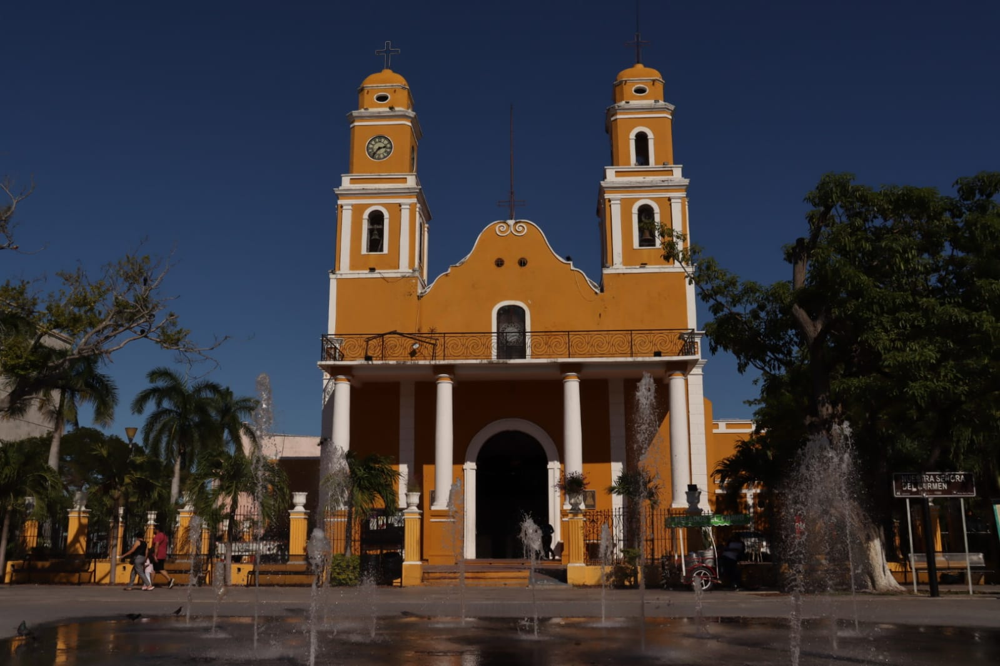
Arquitectura Histórica
Documentación de la emblemática iglesia del Guanal. Toma diurna que aprovecha la luz frontal para saturar los tonos amarillos y detallar los acabados neoclásicos.
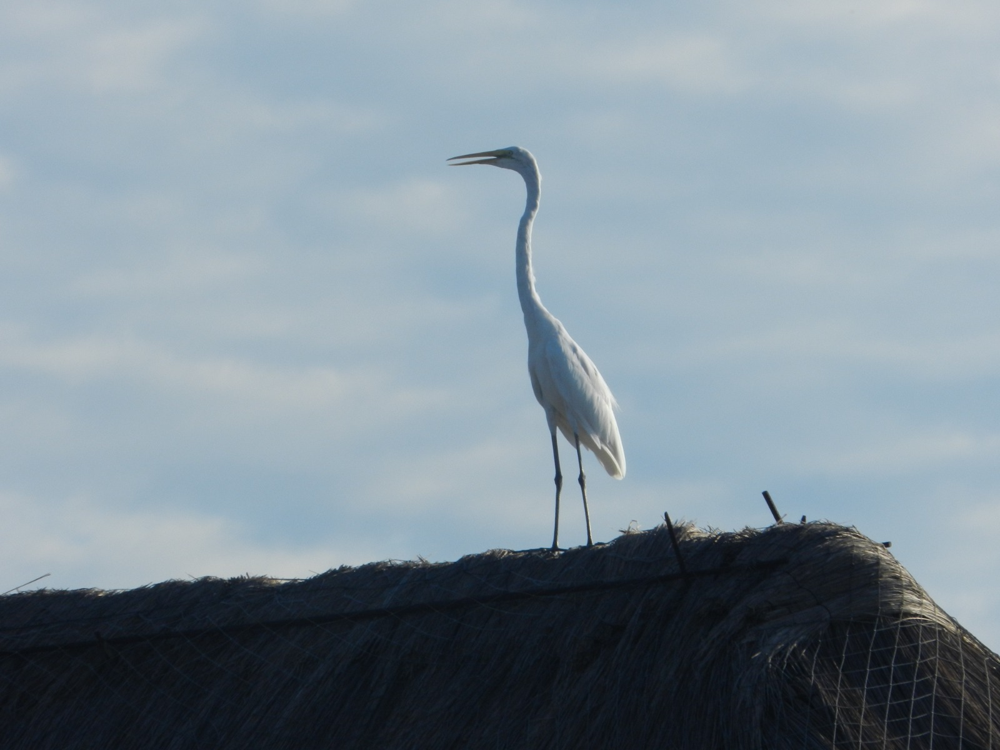
Aislamiento de Sujeto
Captura de una garza blanca posada en un techo de palapa tradicional. Uso de teleobjetivo para aislar al ave contra un fondo de cielo limpio y plano.
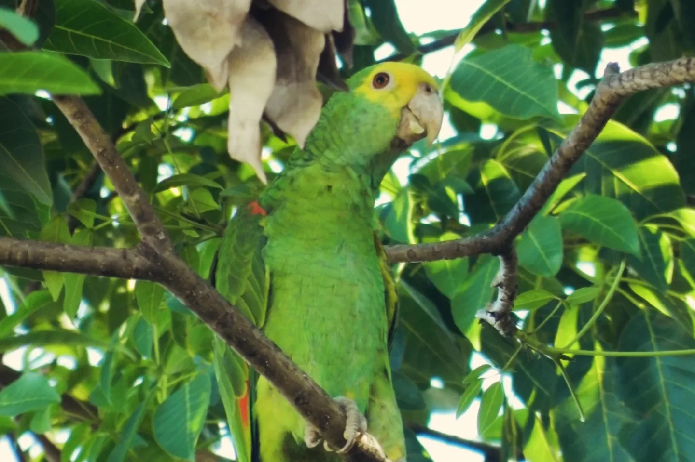
Camuflaje y Nitidez Orgánica
Toma de un loro verde integrado de manera orgánica en el follaje. El reto consistió en clavar el enfoque en el ojo del animal a pesar de la densidad de las ramas.
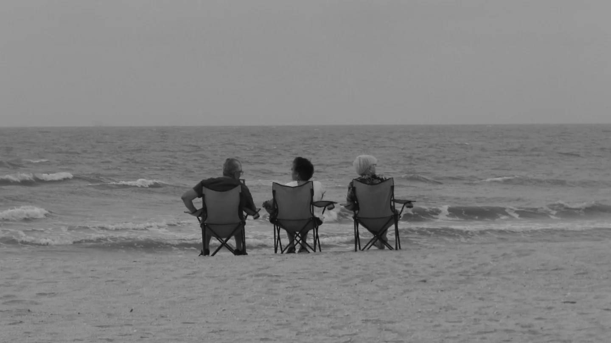
Planos Generales Continentales
Registro costero en blanco y negro estructurado bajo la ley de la mirada y la regla de los tercios, congelando una escena clásica de convivencia playera.
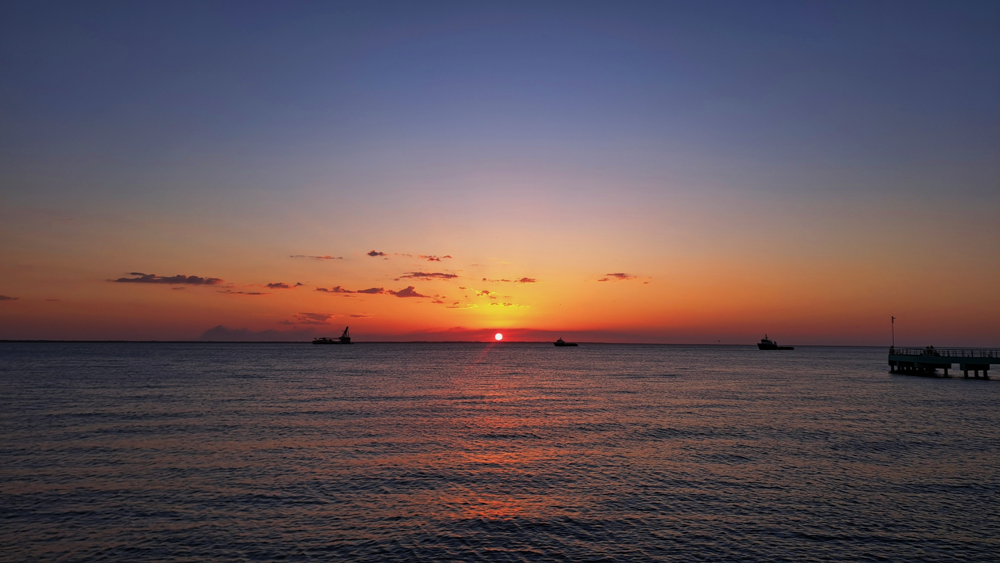
Degradado Atmosférico Infinito
Fotografía de horizonte marino que captura la transición cromática perfecta desde el naranja incandescente del ocaso hasta el azul profundo de la noche.